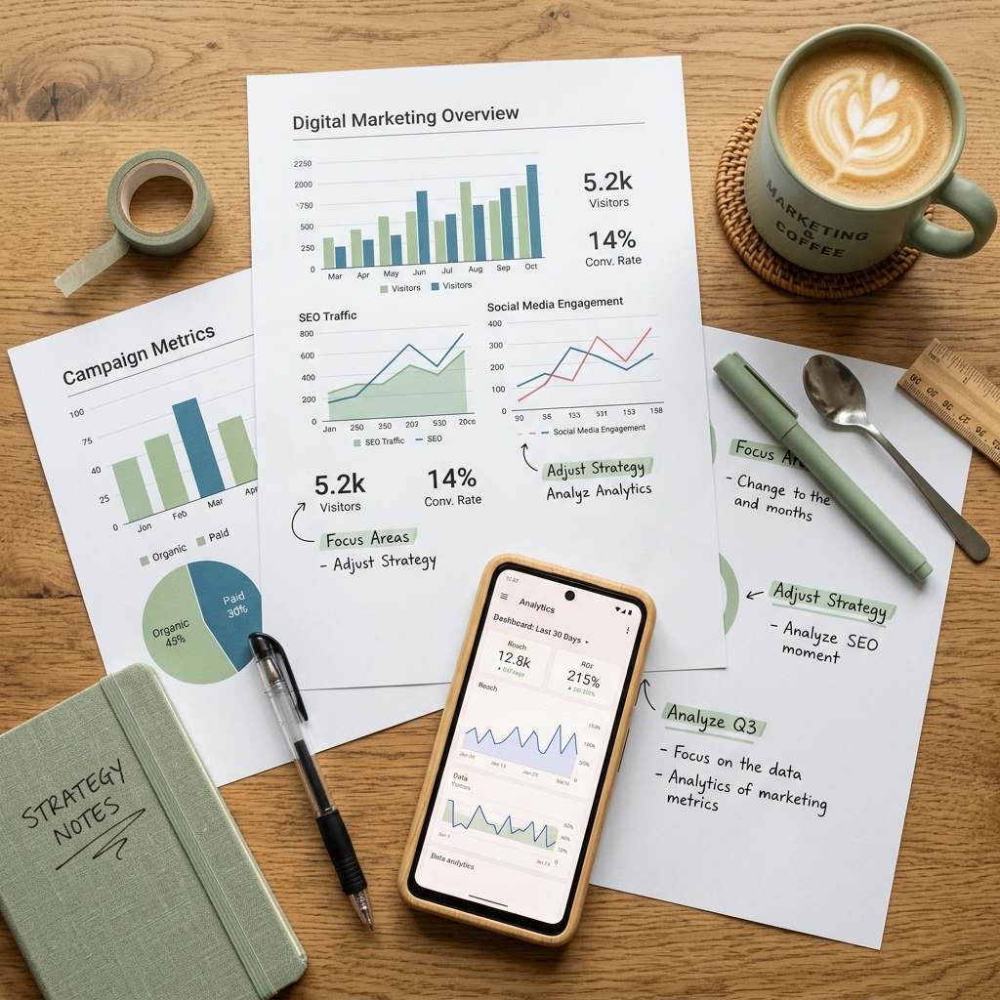

My Journey
Born in the historic town of **Bhusawal**, I was brought up in the majestic blue city of **Jodhpur, Rajasthan**. This unique blend of Maharashtrian heritage and Rajasthani culture enriched my early life with diverse traditions, values, and perspectives.
Growing up in Jodhpur taught me adaptability, resilience, and curiosity. Whether exploring the historical forts or observing how small community businesses thrive, I grew to love storytelling, coding, and continuous personal progress.
Milestones
Born
Born in Bhusawal, Maharashtra, starting a journey of discovery and learning.
Started School
Began school at **Kendriya Vidyalaya Jodhpur, Rajasthan**, initiating my formal education.
Completed 10th
Completed 10th grade from **Kendriya Vidyalaya Jodhpur, Rajasthan**, strengthening my scientific foundation.
Completed 12th
Completed 12th grade from **Kendriya Vidyalaya Nashik Road**, focusing on physics, chemistry, and mathematics.
Joined KBTCOE
Enrolled at KBTCOE to study **Information Technology**, diving deep into computer science principles.
Joined NCC Air Wing
Proudly joined the **NCC Air Wing**, cultivating discipline, leadership, and adventure activities.
Areas of Interest

Technology
Exploring programming models, system architecture, database design, and emerging technology stacks.
Learning
Acquiring certifications, building research habits, and adapting to industry shifts.

Creativity
Aesthetic design compositions, UI styling layout, color selections, and photography.

Marketing
Digital marketing analysis, content placement, search optimization, and consumer funnels.

Personal Growth
Soft skills, public presenting, discipline via NCC, and mental wellness activities.